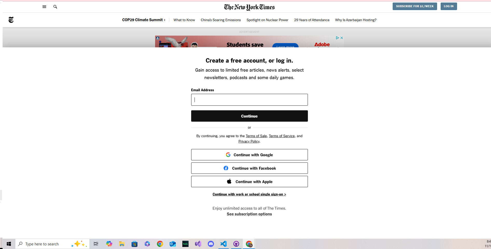
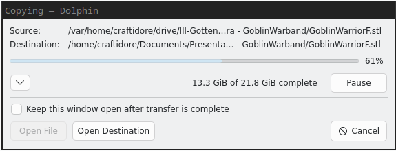
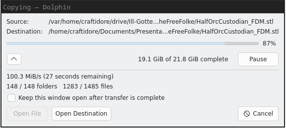

We Have Time Requirements
Presentation by Ty Bates and Elliot Hodge
Performance != Responsiveness
Performance:
- Computation over time
- Processing large amounts of input quickly
Responsiveness:
- User perception of app speed
- Acknowledging user input quickly
- Keeping the user informed
Responsiveness matters more to user experience than performance.
Question #1
What are some examples of unresponsive websites or applications you have used?
(Aside from Pipeline)
Important Deadlines
Guidelines for Responsiveness concern which operations must be completed or acknowledged within a given order of magnitude of time.
Orders of Magnitude
Earthquakes and Responsiveness [x]
| Magnitude | Degree | Result |
|---|
| 2.0 | 100 | Earthquake which can't be felt |
| 3.0 | 1000 | Tremors can be felt |
| 4.0 | 10000 | Things are falling off shelves |
| ... |
| 6.0 | 1000000 | Severe damage across up to 100 miles. |
| ... |
| 15.0 | 1000000000000000 | The Earth is ripped apart. [What If] |
Less than 0.1 seconds
| Audio |
|---|
| 0.001 | Gaps in audio are detectable |
| 0.01 | Distinct Auditory Tones (FIXME: Need more detail) |
| Hand-Eye Coordination |
|---|
| 0.01 | Digital Ink Lag |
| 0.01 | Mouse Movements (Sources Disagree [gnome guidelines] [joltfly]) |
About 0.1 seconds
| 0.1 | Cause and effect |
| 0.1 | Subitizing |
| 0.1 | Audiovisual lock |
| 0.1 | Vision Suppression |
About 1 second
TODO: Incomplete Slide
About 10 seconds
TODO: Incomplete Slide
Guidelines on the Desktop
TODO: Gnome Guidelines slides here
Designing To Meet Real-Time Human-Interaction Deadlines
Immediately acknowledge user clicks.
TODO: WoW screenshot HERE
Question #2
How would you keep Jellyfin's
UI responsive even when
the user has bad ping?
Permit users to abort lengthy operations.
TODO: Screenshot of project 1.
TODO: Screenshots of busy indicators
Don't interrupt unit tasks

[newyorktimes]
Question #3
Can anyone think of an example of when you've been interrupted mid-unit-task?
Guidelines for Progress Indicators
KDE's Progress Indicators


Don't Use Static Progress Indicators
Progress Bar Best Practices
- Work remaining
- 1%/100%
- Avoid Jumpy Progress Bars
- Use human-scale precision
Sources
- [x] https://web.archive.org/web/20210803200647/https://www.gns.cri.nz/Home/Learning/Science-Topics/Earthquakes/Monitoring-Earthquakes/Other-earthquake-questions/What-is-the-Richter-Magnitude-Scale
- [x] What If? by Randall Munroe
- [x] https://joltfly.com/mouse-latency-test/
- [x] MISSING LINK New York Times
- [x] https://www.steinmetz-reuter.de/grabinschriften.html